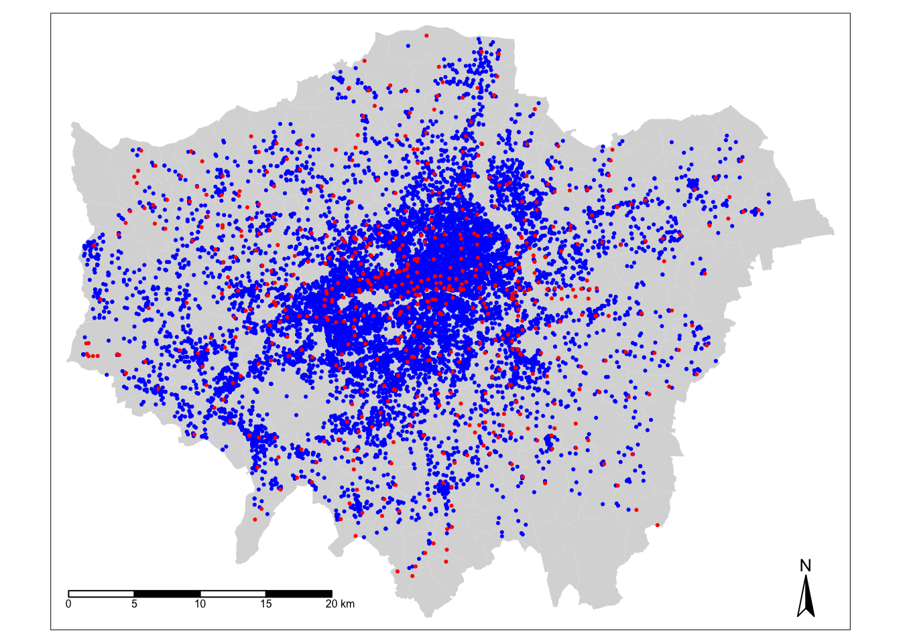

8 Analysing Spatial Patterns III: Point Pattern Analysis
This week, we will be looking at how we can use Point Pattern Analysis (PPA) to detect and delineate clusters within point data. Within point pattern analysis, we look to detect clusters or patterns across a set of points, including measuring density, dispersion and homogeneity in our point structures. There are several approaches to calculating and detecting these clusters, which are explained in our main lecture. We then deploy several PPA techniques, including Kernel Density Estimation, on our bike theft data to continue our investigation from the week before last.
8.1 Lecture recording
- Lecture W8
8.2 Reading list
- Reading #1
- Reading #2
8.3 Bike theft in London
This week, we continue to investigate bike theft in London in 2019 - as we look to confirm our very simple hypothesis: that bike theft primarily occurs near tube and train stations. This week, instead of looking at the distance of individual bike thefts from train stations, we will look to analyse the distribution of clusters in relation to the stations. We will first look at this visually and then look to compare these clusters to the location of train and tube stations quantitatively using geometric operations.
To complete this analysis, we will again use the following data sets: - Bike theft in London for 2019 from data.police.uk - Train and Tube Stations from Transport for London
8.3.1 Housekeeping
Let’s get ourselves ready to start our lecture and practical content by first downloading the relevant data and loading this within our script.
Open a new script within your GEOG0030 project and save this script as wk8-bike-theft-PPA.r. At the top of your script, add the following metadata (substitute accordingly):
# Analysing bike theft and its relation to stations using point pattern analysis
# Data: January 2021
# Author: JustinAll of the geometric operations and spatial queries we will use are contained within the sf library. For our Point Pattern Analysis, we will be using the spatstat library (“spatial statistics”). The spatstat library contains the different Point Pattern Analysis techniques we will want to use in this practical. We will also need the raster library, which provides classes and functions to manipulate geographic (spatial) data in ‘raster’ format. We will use this package briefly today, but look into it in more detail next week. Lastly, you will also need to install dbscan.
# libraries
library(tidyverse)
library(sf)
library(tmap)
library(janitor)
library(spdep)
library(RColorBrewer)
library(raster)
library(spatstat)
library(dbscan)8.3.2 Loading data
This week, we will continue to use our data from Week 06. This includes:
- London Ward boundaries for 2018
- Crime in London for 2019 from data.police.uk
- Train and Tube Stations from Transport for London
You should load these data sets as new variables in this week’s script. You should have the original data files for both the London Wards and 2019 crime already in your raw data folder.
Note
If you did not export your OpenStreetMap train and tube stations from our practical in week W06, you will need to re-run parts of your code to download and then export the OpenStreetMap data. If this is the case, open your wk6-bike-theft-analysis.r and make sure you create a shapefile of the train and tube stations.
Let’s go ahead and load all of our data at once - we did our due diligence in Week 06 and know what our data looks like and what CRS they are in, so we can go ahead and use pipes to make loading our data more efficient:
# read in our 2018 London Ward boundaries
london_ward_shp <- read_sf("data/raw/boundaries/2018/London_Ward.shp")
# read in our OSM tube and train stations data
london_stations_osm <- read_sf("data/raw/transport/osm_stations.shp")
# read in our crime data csv from our raw data folder
bike_theft_2019 <- read_csv("data/raw/crime/crime_all_2019_london.csv") %>%
# clean names with janitor
clean_names() %>%
# filter according to crime type and ensure we have no NAs in our data set
filter(crime_type == "Bicycle theft" & !is.na(longitude) & !is.na(latitude)) %>%
# select just the longitude and latitude columns
dplyr::select(longitude, latitude) %>%
# transform into a point spatial dataframe
# note providing the columns as the coordinates to use
# plus the CRS, which as our columns are long/lat is WGS84/4236
st_as_sf(coords = c("longitude", "latitude"), crs = 4236) %>%
# convert into BNG
st_transform(27700) %>%
# clip to London
st_intersection(london_ward_shp)## Warning: attribute variables are assumed to be spatially constant throughout all
## geometriesLet’s create a quick map of our data to check it loaded correctly:
# plot our London Wards first
tm_shape(london_ward_shp) + tm_fill() +
# then add bike crime as blue
tm_shape(bike_theft_2019) + tm_dots(col = "blue") +
# then add our stations as red
tm_shape(london_stations) + tm_dots(col = "red") +
# then add a north arrow
tm_compass(type = "arrow", position = c("right", "bottom")) +
# then add a scale bar
tm_scale_bar(breaks = c(0, 5, 10, 15, 20), position = c("left", "bottom"))
Great - that looks familiar! This means we can move forward with our data analysis and theoretical content for this week.
8.4 Point pattern analysis
Point pattern analysis (PPA) studies the spatial distribution of points. PPA uses the density, dispersion and homogeneity in our point data sets to assess, quantify and characterise its distribution. Over the last fifty years, various methods and measurements have been developed to analyze, model, visualise, and interpret these properties of point patterns (Qiang et al, 2020).
There are three main categories of PPA techniques:
- Descriptive statistics: The use of descriptive statistics will provide a summary of the basic characteristics of a point pattern, such as its central tendency and dispersion. Descriptive statistics provide a simple way of visualising a data set as a whole, from plotting the median or mean centre, or, often preferably, a standard deviational ellipse for those data sets that display a directional pattern.
- Density-based methods: Density-based methods focus on the first-order properties of a data set, i.e. the variation in the individual locations of the points in the data set across the area of interest, and will characterise our data set’s distribution accordingly in terms of density.
- Distanced-based methods: Distanced-based methods focus on the second-order properties of a data set, i.e. the interactions between points within our data and whether they appear to have influence on one another and form clusters, and will characterise our data set’s distribution accordingly in terms of dispersion.
The main library to use when it comes to point pattern analysis in R is the spatstat library, developed by Baddeley, Rubak and Turner since 2005. As their documentation states, spatstat “is a package for the statistical analysis of spatial data. Its main focus is the analysis of spatial patterns of points in two-dimensional space”. According to it’s “Get Started with spatstat” documentation, "spatstat supports a very wide range of popular techniques for statistical analysis for spatial point patterns, including:
- Kernel estimation of density/intensity
- Quadrat counting and clustering indices
- Detection of clustering using Ripley’s K-function
- Model-fitting
- Monte Carlo tests
as well as some advanced statistical techniques" (Baddeley et al, 2020). We will only cover a brief amount of the functionality the package offers - it has almost 1,800 pages of documentation and over 1000 commands, so it would be near impossible to cover everything even if we had a full module dedicated just to PPA. Instead, we will focus on some key PPA techniques:
- Quadrat Analysis
- Kernel Density Estimation
- Nearest Neighbour
- Ripley’s K function
But before we get started with our analysis, you need to know one critical piece of information in order to use spatstat: we need our data to be in the format of a ppp object. There are some spatial packages in R that require us to convert our data from an sf simple features object (e.g. for point data, a SpatialPoints object) into a different spatial object class - and spatstat is one of them.
Note
The ppp format is specific to spatstat, but you may find it used in other spatial libraries. An object of the class ppp represents a two-dimensional point data set within a pre-defined area, known as the window of observation, a class in its own right, known as owin in spatstat. We can either directly create a ppp object from a list of coordinates (as long as they are supplied with a window) or convert from another data type (using the as.ppp() function). However, as spatstat predates sf, this conversion function does not yet work with sf data objects. Instead, therefore, we have to create a workaround workflow that enables us to extract the coordinates from our bike_theft_2019 spatial dataframe for use within the ppp function.
To turn our bike_theft_2019 spatial dataframe into a ppp object, we need to extract the geometry of our bike theft points, store this geometry as two separate columns within a matrix, and provide these columns, alongside an observation window equal to our london_ward_shp spatial dataframe, to create a PPP object:
# create a window of observation
window <- as.owin(london_ward_shp$geometry)
# extract coordinates from our bike theft data set as a matrix
bike_theft_xy <- bike_theft_2019 %>% st_coordinates()
# create a ppp object
bike_theft_ppp <- ppp(x=bike_theft_xy[,1], y= bike_theft_xy[,2], window=window)## Warning: data contain duplicated points# plot our ppp object
plot(bike_theft_ppp)Our plot shows us our bike_theft_ppp object, which includes both the coordinate points of our bike theft data and our London window. You should also see your bike_theft_ppp object variable appear in your Environment window - as well as see a message stating that our data contain duplicated points.
Let’s see if this is true - we can first use a logical statement from the R base library to check if our bike_theft_ppp object contains duplicated points and then count the total number of duplicates exist using the multiplicity() function (which “counts the number of duplicates for each point in a spatial point pattern”) from the spatstat library.
# check for duplicates using
anyDuplicated(bike_theft_ppp)## [1] TRUE# count the sum of the number of duplicated points
sum(multiplicity(bike_theft_ppp) > 1)## [1] 12352One of the key assumptions underlying many analytical methods is that all events are unique. In fact, some statistical procedures actually may return very wrong results if duplicate points are found within the data. In terms of our bike theft data, it is unsurprising that it contains duplicates. The Police service use snapping points, to which crimes are snapped to in order to preserve the anonymity and privacy of those involved. This is an issue in spatial point pattern analysis as we need our “events”, i.e. each record of a crime and its respective location, to be unique in order for our analysis to be accurate.
To account for these issues within our data set (and other data sets that contain duplicates), we have three options:
We can remove the duplicates and pretend they simply are not there. However, this is feasible only when your research problem allows for this, i.e. the number of points at each location is not as important as the locations themselves, and therefore you are happy to ‘ignore’ some of the data.
Create and assign a weighting schema to our points, where each point will have an attribute that details the number of events that occur in that location - and utilise this weight within our PPA techniques. Weights however can only be used with certain PPA techniques (e.g. Kernel Density Estimation).
Force all points to be unique by utilising a function that offsets our points randomly from their current location. If the precise location is not important for your analysis - or, for example, you are dealing with data that in our case is already slightly offset, we can introduce a “jitter” to our data set that slightly adjusts all coordinates so that the event locations do not exactly coincide anymore. This way, our duplicates will no longer have the same precise location. This approach however introduces a certain level of uncertainty into the precise location of any analysis derived from our data sets.
Each approach will have a specific compromise, which you will have to decide upon depending on the type of analysis you are completing. In our case, we will choose the jitter approach to keep all of our bike theft events. We know that already the location of our bike thefts are not precise locations of the original theft, therefore adding additional offset will not detract from our analysis.
Let’s shift all our coordinates slighlty to ‘remove’ our duplicates and essentially ‘move’ all points into unique locations. We will use the rjitter function from the spatstat library, which applies an independent random displacement to each point in a point pattern:
# add an offset to our points using the rjitter function
bike_theft_ppp_jitter <- rjitter(bike_theft_ppp, retry=TRUE, nsim=1, drop=TRUE)
# count the number of duplicated points of the new jitter data set
anyDuplicated(bike_theft_ppp_jitter)## [1] FALSE# plot the resulting ppp object
plot(bike_theft_ppp_jitter)Great, we now have our bike theft data in a format ready to be analysed with our different PPA techniques using the spatstat library!
Note
One additional thing to note about the ppp data object is that a ppp object does not necessarily have to have any attributes (our fields) associated with the events each point our point data represents. If your data does have attributes (such as calculating a weight as outlined above for dealing with duplications), these attributes are referred to as marks within the spatstat environment. Be aware that some functions do require these marks to be present - and you will find this out only from the spatstat documentation. We will not use any functions/techniques today that require marks.
8.5 Density-based techniques
Density-based techniques are used to characterise the pattern of a point data set utilising its general distribution. A bit like our spatial autocorrelation techniques, we can calculate densities at both the global and local scale. However, as you will see, for PPA, global density really does not tell us much more about the distribution of our data - in terms of areas of high and low densities, for example. This is where local density techniques such as Quadrat Analysis and Kernel Density Estimation can help us visualise these differences in density in our data’s distribution.
Quadrat analysis
We can create a simple understanding of our data’s distribution by first understanding its global density - this is simply the ratio of the observed number of points, \(n\) , to the study region’s surface area, \(a\):
Calculate the global density of our bike theft point data relative to London:
# calculate the global density of our bike points
global_density <- length(bike_theft_2019$NAME)/sum(st_area(london_ward_shp))
# inspect
global_density## 1.174831e-05 [1/m^2]We can see that we have a global density of 0.00001174 bike thefts per m^2 in London. This simple density analysis could be supported with further descriptive statistics, however, we still would know little about the local density of our points.
The most basic approach to understanding a point pattern’s local density is to simply measure the density at different locations within the study area. This approach helps us assess if the density is constant across the study area. The most simplest approach to this measurement is through Quadrat Analysis, where the study area is divided into sub-regions, aka quadrats. The point density is then computed for each quadrat, by dividing the number of points in each quadrat by the quadrat’s area.
Quadrats can take on many different shapes (and utlise different approaches to creating these shapes). The most basic approach is using squares (or rather, a grid). Furthermore, the choice of quadrat numbers and quadrat shape can influence the measure of local density and therefore must be chosen with care. We will start with a simple quadrat count by dividing the observation window into 15 x 15 sections and then counting the number of bicycle thefts within each quadrant using the quadratcount() function within R.
# quadratcount in a 15 x 15 grid across the observational window
biketheft_quadrat <- quadratcount(bike_theft_ppp_jitter,nx=10,ny=10)
# inspect
plot(biketheft_quadrat)
Our resulting quadrat count shows total counts of bike theft - we can see quite quickly that the quadrats in central London are likely to have a higher local density as their count is much higher than those on the outskirts of London. If we divided our count by the area covered by each quadrat, we would also be able to calculate a precise local density. We will not do this for now, as realistically, it is not often that you would want to use quadrat analysis for actual PPA. The reason why we look at this technique is that it provides us with an easy way to think about how to compare our data distribution and how this relates to the Poisson distribution of Complete Spatial Randomness (CSR).
When looking at the distribution of our points and the respective patterns they show, the key question we often want to answer as geographers and spatially-enabled thinkers is: are our points clustered, randomly distributed (i.e. display complete spatial randomness), uniform or dispersed? Whilst we can visually assess this distribution, to be able to statistically quantify our data’s distribution, we can compare its distribution to that of the Poisson distribution. The Poisson distribution describes the probability or rate of an event happening over a fixed interval of time or space.
The Poisson Distribution applies when:
- The events are discrete and can be counted in integers
- Events are independent of each other
- The average number of events over space or time is known
Point data that contains a random distribution of points is said to have a Poisson distribution. The Poisson distribution is very useful in Point Pattern Analysis as it allows us to compare a random expected model to our observations. Essentially, if our data does not fit the Poisson model, then we can infer that something interesting might be going on and our events might not actually be independent of each other. Instead, they might be clustered or dispersed and there is likely to be underlying processes influencing these patterns. The most basic test of CSR with the Poisson distribution in PPA can be completed with our Quadrat Analysis results.
We compare our quadrat results with a Poisson distribution for the same quadrats and determine whether the pattern is generated in a random manner; i.e. whether the distribution of points in our study area differs from complete spatial randomness (CSR) or whether there are some clusters present. To enable this, we can run a Chi-Squared Test of our data against a theoretical randomly generated point pattern data set with the same number of points and window, with the null hypotheses that our point data have been generated under complete spatial randomness. Our chi-squared test will tell us whether our data is distributed under the null hypothesis - and determine whether there is a statistically significant difference between the expected distribution (i.e. CSR) and the observed distribution (our bike theft point data):
# chi-square between observed point pattern of our data and Poisson sampled points
quadrat.test(bike_theft_ppp_jitter,nx=10,ny=10)## Warning: Some expected counts are small; chi^2 approximation may be inaccurate##
## Chi-squared test of CSR using quadrat counts
##
## data: bike_theft_ppp_jitter
## X2 = 55332, df = 80, p-value < 2.2e-16
## alternative hypothesis: two.sided
##
## Quadrats: 81 tiles (irregular windows)Our \(p\) value is well below 0.05 (or 0.01 for that matter), which means there is a statistically significant difference between the expected distribution (i.e. CSR) and the observed distribution (our bike theft point data). We can therefore reject the null hypothesis that our point data have been generated under complete spatial randomness and confirm that our point pattern was not generated in a random matter.However, our completing both a quadrat analysis and the resulting Chi-Squared test is not exactly the most efficient way of looking to understand the relative local densities of our data set - nor can we compare these results to the location of our train and tube stations to look into our original hypothesis that bike theft primarily occurs near tube and train stations.
8.5.1 Kernel Density Estimation
We now have an understanding of whether our data is randomly distributed or not - and our quadrats give us a very coarse understanding of where there may be clusters within our data. But instead of looking at the distribution of our bike theft with the boundaries of our quadrats (or any other tessellation we could pick), we can also analyse our points using a Kernel Density Estimation (KDE). KDE is a statistical technique to generate a smooth continuous distribution between data points that represent the density of the underlying pattern.
Within spatial analysis, a KDE will produce a surface (raster) that details the estimated distribution of our event point data over space. Each cell within our raster contains a value that is this estimated density at that location; when visualised in its entirety as the whole raster, we can quickly identify areas of high and low density, i.e. where are clusters are located in our data set. To create this surface, a KDE computes a localised density for small subsets of our study area - but unlike quadrat analysis, these subsets overlap one another to create a moving sub-region window, defined by a kernel. A kernel defines the shape and size of the window and can also weight the points, using a defined kernel function. The simplest kernel function is a basic kernel where each point in the kernel window is assigned equal weight. The kernel density approach generates a grid of density values whose cell size is smaller than that of the kernel window. Each cell is assigned the density value computed for the kernel window centered on that cell. The resulting surface is created from these individually, locally calculated density values.
Producing a KDE in R is very straight-forward in spatstat, using your ppp object and the density.ppp() function. However, you will need to consider both the bandwidth or diameter of your Kernel (sigma) and whether you want to apply a weighting to your points using a function. First, let’s go ahead and create a simple KDE of bike theft with our bandwidth set to 100m:
# kernel density estimation of our bike theft ppp object
plot(density.ppp(bike_theft_ppp_jitter, sigma=100))
We can see from just our KDE that there are visible clusters present within our bike theft data, particularly in and around central London. We can even see our south-west cluster that we saw in our proportional symbols map last week. We can go ahead and vary our bandwidth to to see how that affects the density estimate:
# kernel density estimation of our bike theft ppp object with 500m bandwith
plot(density.ppp(bike_theft_ppp_jitter, sigma=500))Our clusters now appear brighter and larger than our KDE with a 100m bandwidth - this is because changing the bandwidth enables your KDE to take into account more points within its calculation, resulting in a smoother surface. However, there are issues with oversmoothing your data - as you can see above, our clusters are not as well defined and therefore we may attribute high levels of bike theft to areas where there actually is not that much. Smaller bandwidths will lead to a more irregular shaped surface, where we have more precision in our defined clusters - but, once again, there are issues of undersmoothing. In our case, as we know bike theft is not exactly a phenomena that obeys strict square boundaries, we may run into similar issues of boundary effects that we see in areal unit aggregation, and end up not extending our clusters far enough to cover our “hotspot” areas.
Whilst there are automated functions (e.g. based on maximum-likelihood estimations) that can help you with selecting an appropriate bandwidth, in the end you will have to make a decision on what is most appropriate for your data set. Thinking through the phenomenon that you are analysing will help. Although bandwidth typically has a more pronounced effect upon the density estimation than the type of kernel used, kernel types can affect the result too.
When we use a different kernel type, we are looking to weight the points within our kernel differently:

Figure 8.1: Kernel Types and Their Distributions.
Each function will result in a slightly different estimation.“The normal distribution weighs all points in the study area, though near points are weighted more highly than distant points. The other four techniques use a circumscribed circle around the grid cell. The uniform distribution weighs all points within the circle equally. The quartic function weighs near points more than far points, but the fall off is gradual. The triangular function weighs near points more than far points within the circle, but the fall off is more rapid. Finally, the negative exponential weighs near points much more highly than far points within the circle and the decay is very rapid.” (Levine, 2013).
Deciding which function is most suitable for your analysis will all depend on what you are trying to capture. We can compare and see the impact of different functions on our current data set looking at the default kernel in density.ppp(), which gaussian, alongside the epanechnikov, quartic or disc kernels. Note, the sigma in these KDEs is set to 400m:


To change the kernel within your KDE, you simply need to add the kernel parameter and set it to one of the kernels available, denoted as a string, e.g. “epanechnikov”, “quartic”, “disc”. Ultimately, bandwidth will have a more marked effect upon the density estimation than kernel type. For now, however, no matter which kernel or which bandwidth (within reason, of course) we use, we can be quite confident in stating that bike theft in London in 2019 is not a spatially random process and we can clearly see the areas where bicycle theft is most concentrated.
How can we use this new data in our original analysis that looks to find out whether bike theft primarily occurs near tube and train stations? The main use of a KDE is primarily for visual analysis of our point data distribution. However, our current plotting approach is quite limited - if you had not noticed, we have primarily been using the base R plotting techniques to display the results of our density.ppp() function. It would therefore be difficult to create any maps that allow visual comparison to our train stations - nor could we really complete any further analysis on our KDE data set. This is because, at the moment, our KDE raster is stored as a spatstat object - and is not, currently, a standalone raster data set. As a result, we cannot use our KDE with other visualisation libraries such as tmap - or in the future ggplot2.
To enable this use, we need to first export our KDE spatstat object into a standalone raster that can be used with these libraries. We therefore need to look to the raster library that is capable of doing just that. Until now, with our spatial data, we have primarily used vector data that the sf library can read, load and manage - however the sf library does not contain the right functions to enable the same reading, loading and management of raster data. As a result, it is not a suitable spatial library for dealing with raster data. Instead, we need to use the raster library, which is the default spatial library for dealing with raster data (i.e. just as we use sf for vector, we use raster for raster).
To convert spatstat KDE object into a raster, we only need one very simple function from the raster library: raster(). To return a raster from our density.ppp() function, we simply need to pipe its output into the raster function:
# create a raster directly from the output of our KDE
kde_400g_raster <- density.ppp(bike_theft_ppp_jitter, sigma = 400, edge=T) %>% raster()
# plot the resulting raster
plot(kde_400g_raster)We now have a standalone raster we can use with a) any (analysis-oriented) functions in the raster() library (more on this next week) and b) our visualisation libraries, including tmap. Before we go ahead, one issue we will face - although it is not clear in the plot above - is that our resulting raster does not have a Coordinate Reference System. A bit like using the st_crs() function in sf, we can use the crs() function within the raster library to check our kde_400g_raster CRS:
# check the CRS of the kde_400g_raster
crs(kde_400g_raster)## CRS arguments: NAYou should see an NA appear within our CRS arguments - the kde_400g_raster does not have a CRS, so we will need to set the CRS:
# set the CRS of the kde_400g_raster to BNG
crs(kde_400g_raster) <- "+init=EPSG:27700"## Warning in showSRID(uprojargs, format = "PROJ", multiline = "NO", prefer_proj =
## prefer_proj): Discarded datum OSGB_1936 in Proj4 definition# Check the CRS of the kde_400g_raster
crs(kde_400g_raster)## CRS arguments:
## +proj=tmerc +lat_0=49 +lon_0=-2 +k=0.9996012717 +x_0=400000
## +y_0=-100000 +ellps=airy +units=m +no_defsNow we have our raster ready to map - let’s map it using tmap. We use the same “Grammar of Graphics” approach that we’ve used with our vector data and will first provide tmap with our kde_400g_raster as a tm_shape(). We then add the tm_raster() function, with the required and optional parameters we want to include:
# map our kde_400g_raster using tmap
tm_shape(kde_400g_raster) +
tm_raster("layer", palette = "viridis")With our kde_400g_raster using tmap, we can go ahead and customise our map as we would do with our vector mapping - for example, changing the legend tile, adding a title, north arrow etc.
8.6 Assignment 1
We are now one step closer to visually investigating our original hypothesis - that bike theft primarily occurs near tube and train stations. To help with our analysis, we could go ahead and change the tmap_mode to the view mode and use the basemap to visually investigate the distribution of bike theft and its relation to train stations. Alternatively, we could make a static map that overlays our london_stations_osm spatial dataframe as part of our map and compare their location against our visible clusters, that we could use for visual analysis and confirmation of our hypothesis.
For this week’s assignment, you need to produce a finished KDE map for bike theft in London that also shows the location of train stations relative to our KDE clusters. You can adjust the bandwidth and kernel settings if you like, but mainly you need to create a final map that contains this additional data layer as well our expected mapping conventions, plus a title and a renamed legend title. Once your map is done: do you think our hypothesis is confirmed? How confident are you in this assessment?
8.7 Distance-Based Methods
We have spent a good amount of time looking at using density-based methods to a) quantify whether our point data is randomly distributed or not and b) visualise and identify high and low areas of density, showing if our data is clustered and where. Overall, within PPA, (kernel) density estimation is certainly a prominent technique, but we also have distance-based methods that allow us to quantify the 2nd order properties of our data, i.e. the influence the location of these points have on one another.
Distance-based measures analyze the spatial distribution of points using distances between point pairs, with the majority using Euclidean distance, to determine quantitatively whether our data is, again, randomly distributed or shows sign of clustering or dispersion. These methods are a more rigorous alternative to using the Quadrat Analysis approach, and enables us to assess clustering within our point data at both a global and local scale.
8.7.1 Average Nearest Neighbour
Average Nearest Neighbour (ANN) is the average distance between all points within a data set and their individual nearest point (known as Nearest-Neighbour Distance (NND)). ANN is used as a global indicator to measure the overall pattern of a point set. The ANN of a given point collection can be compared with the expected ANN from points following complete spatial randomness (CSR) to test whether our point data is clustered or dispersed (Yuan et al. 2020).
.](images/w08/ann_ppa.png)
Figure 8.2: Relations between different point patterns and mean nearest neighbor distance (NND). Source: Yuan et al. 2020.
The approach is similar to that of the Quadrat Analysis simulation we saw above, but by using distance rather than density grouped to arbitrary quadrats, ANN is likely to be a more robust quantification of our point distribution. We can calculate the ANN for our data set by using the nndist() function from the spatstat library:
# calculate the average distance to nearest neighbour
mean(nndist(bike_theft_ppp_jitter, k=1))## [1] 61.3923We can see that the average nearest neighbour for all points is 61.3 metres. To understand whether our data set is clustered or dispersed, we now need to run a Monte Carlo simulation of running the ANN test for multiple (think hundreds) of Poisson distributions of our bike thefts within our London ward in order to generate a graph as above. Then, similar to our Global Moran’s I calculation, we would compare our mean to that of all of the means generated to determine whether our data set is clustered or dispersed.
The code and computing requirements to complete this analysis is quite complex, therefore, we look instead to different approach, which is to plot the ANN values for different order neighbours (i.e. first closest point, second closest point etc), to get an insight into the spatial ordering of all our points relative to one another. For point patterns that are highly clustered, we would expect that the average distances between points to be very short. However, this is based on the important assumption that the point pattern is stationary throughout the study area. Further to this, the size and shape of the study area also have a very strong effect on this metric.
Calculate the average nearest neighbour to the \(k\) nearest neighbours for our bike theft data:
# calculate the ANN for up to 100 neighbours
bike_theft_ann <- apply(nndist(bike_theft_ppp_jitter, k=1:100),2,FUN=mean)
# plot the results of k ANN
plot(bike_theft_ann ~ seq(1:100))
In our case, the plot does not reveal anything interesting in particular except that higher order points seem to be slightly closer than lower order points. Overall, the ANN is a good approach to conduct statistical tests on large data sets (if we were to run the Monte Carlo simulation explore above), but visually it does not tell us a huge amount about our data set!
8.7.2 Ripley’s K function
One way of getting around the limitations of both the ANN and Quadrat Analysis is to use Ripley’s K function. Ripley’s K function looks at the distance between a point and ‘all distances’ to other points and automatically compare this to a Poisson-distribution point pattern (without the need to add in Monte Carlo simulation code as above). Ripley’s K function essentially summarises the distance between points for all distances using radial distance bands. The calculation is relatively straightforward:
- For point event A, count the number of points inside a buffer (radius) of a certain size. Then count the number of points inside a slightly larger buffer (radius).
- Repeat this for every point event in the data set.
- Compute the average number of points in each buffer (radius) and divide this to the overall point density.
- Repeat this using points drawn from a Poisson random model for the same set of buffers.
- Compare the observed distribution with the distribution with the Poisson distribution.
We can conduct a Ripley’s K test on our data very simply with the spatstat package using the Kest() function.
Note
Be careful with running Ripley’s K on large datasets as the function is essentially a series of nested loops, meaning that calculation time will increase exponentially with an increasing number of points.
Run a Ripley’s K function on our bike theft data using the Kest() function:
# calculate Ripley's K for our bicycle theft locations, maximum radius of 1 kilometre
plot(Kest(bike_theft_ppp_jitter,correction='border',rmax=5000))The Kpois(r) line shows the theoretical value of K for each distance radius (r) under a Poisson assumption of Complete Spatial Randomness. When our observed/calculated K values are greater than the expected K, this indicates clustering of points at a given distance band. In our data set, we can see our observed distribution exceeds the Poisson distribution across our distance bands - therefore our data is more clustered than what would be expected in a random distribution across our various local scales.
There are several limitations to Ripley’s K - in the same fashion as the Average Nearest Neighbour Analysis- it assumes a stationary underlying point process. From our previous analysis and visualisation of our bike theft data, we know that this is unlikely to be the case, with the prevalence of bike theft influenced by a multitude of factors that they themselves vary over space.
8.7.3 DBSCAN
8.8 Before you leave
Primarily, as geographers and spatially-enabled thinkers, we are keen to understand our point data’s distribution and understand whether are our points clustered, randomly distributed (i.e. display complete spatial randomness), uniform or dispersed. We have looked at various techniques that enable us to statistically and visually assess our data’s distribution and understand whether our data is randomly distributed or not.
Primarily, our main focus is using Kernel Density Estimation as a technique for the visual display and analysis of our data and its respective areas of high and low density. However, we can also use DBSCAN to create precise cluster outlines that can be also used for visual analysis - but also can be further used for quantitative analysis, via geometric operations. And that is us done for this week.